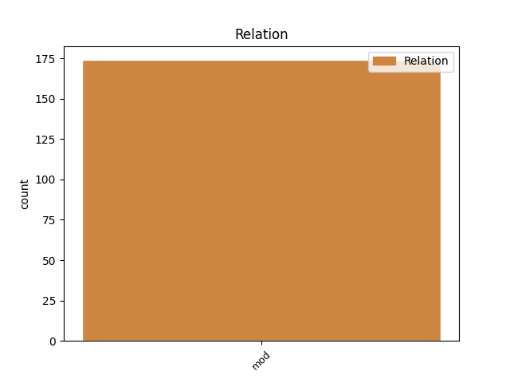
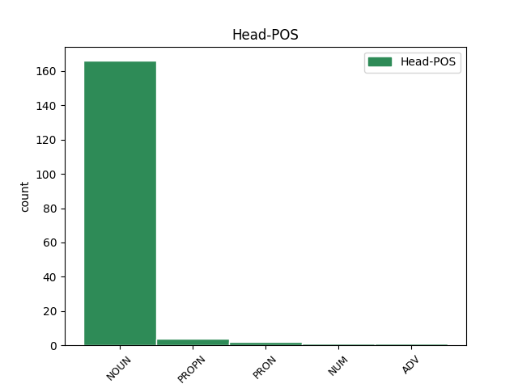
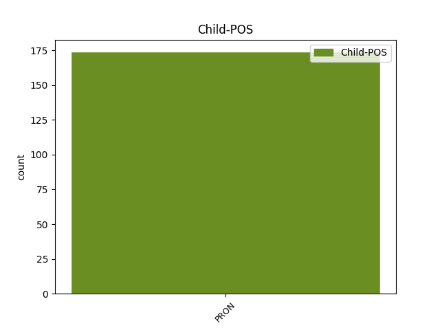

Distribution of features within this leaf



Agreement Rules sorted by frequency.
- When the dependent token is the modifer(mod) of the head token, and the dependent token is PRON.
1 انہوں _ _ _ _ 0 _ _ _
2 نے _ _ _ _ 0 _ _ _
3 کہا _ _ _ _ 0 _ _ _
4 کہ _ _ _ _ 0 _ _ _
5 وزیر _ _ _ _ 0 _ _ _
6 اعظم _ _ _ _ 0 _ _ _
7 نے _ _ _ _ 0 _ _ _
8 کل _ _ _ _ 0 _ _ _
9 منعقدہ _ _ _ _ 0 _ _ _
10 جلسہ _ _ _ _ 0 _ _ _
11 مےں _ _ _ _ 0 _ _ _
12 قیمتوں _ _ _ _ 0 _ _ _
13 مےں _ _ _ _ 0 _ _ _
14 اضافہ _ _ _ _ 0 _ _ _
15 , _ _ _ _ 0 _ _ _
16 کرپشن _ _ _ _ 0 _ _ _
17 یا _ _ _ _ 0 _ _ _
18 ماؤیسٹوں _ _ _ _ 0 _ _ _
19 کے _ _ _ _ 0 _ _ _
20 خطرہ _ _ _ _ 0 _ _ _
21 جیسے _ _ _ _ 0 _ _ _
22 مسائل _ _ _ _ 0 _ _ _
23 کا _ _ _ _ 0 _ _ _
24 کوئی کوئی PRON PRP Case=Nom|Number=Sing|Person=3|PronType=Prs 25 mod _ ChunkId=NP11|ChunkType=head|Tam=0|Vib=0
25 تذکرہ تذکرہ NOUN NN Case=Nom|Gender=Masc|Number=Sing|Person=3 0 _ _ _
26 نہیں _ _ _ _ 0 _ _ _
27 کیا _ _ _ _ 0 _ _ _
28 ۔ _ _ _ _ 0 _ _ _
Disagree Examples:
1 '' _ _ _ _ 0 _ _ _
2 تو _ _ _ _ 0 _ _ _
3 حضور _ _ _ _ 0 _ _ _
4 صلی _ _ _ _ 0 _ _ _
5 اللہ _ _ _ _ 0 _ _ _
6 علیہ _ _ _ _ 0 _ _ _
7 وسلم _ _ _ _ 0 _ _ _
8 نے _ _ _ _ 0 _ _ _
9 اجازت _ _ _ _ 0 _ _ _
10 عطا _ _ _ _ 0 _ _ _
11 فرمائی _ _ _ _ 0 _ _ _
12 اور _ _ _ _ 0 _ _ _
13 فرمایا _ _ _ _ 0 _ _ _
14 کہ _ _ _ _ 0 _ _ _
15 '' _ _ _ _ 0 _ _ _
16 تمہارے تو PRON PRP Case=Nom|Gender=Masc|Number=Plur|Person=2|PronType=Prs 22 mod _ ChunkId=NP3|ChunkType=head|Tam=ka|Vib=کا
17 تقویٰ _ _ _ _ 0 _ _ _
18 اور _ _ _ _ 0 _ _ _
19 لاحول _ _ _ _ 0 _ _ _
20 ولاقو _ _ _ _ 0 _ _ _
21 الا _ _ _ _ 0 _ _ _
22 باللّٰہ باللّٰہ PROPN NNP Case=Acc|Gender=Masc|Number=Sing|Person=3 0 _ _ _
23 کی _ _ _ _ 0 _ _ _
24 کثرت _ _ _ _ 0 _ _ _
25 کی _ _ _ _ 0 _ _ _
26 برکت _ _ _ _ 0 _ _ _
27 سے _ _ _ _ 0 _ _ _
28 اللہ _ _ _ _ 0 _ _ _
29 تعالیٰ _ _ _ _ 0 _ _ _
30 نے _ _ _ _ 0 _ _ _
31 تمہاری _ _ _ _ 0 _ _ _
32 غیب _ _ _ _ 0 _ _ _
33 سے _ _ _ _ 0 _ _ _
34 مدد _ _ _ _ 0 _ _ _
35 فرمائی _ _ _ _ 0 _ _ _
36 ہے _ _ _ _ 0 _ _ _
37 '' _ _ _ _ 0 _ _ _
38 ۔ _ _ _ _ 0 _ _ _
1 '' _ _ _ _ 0 _ _ _
2 تو _ _ _ _ 0 _ _ _
3 حضور _ _ _ _ 0 _ _ _
4 صلی _ _ _ _ 0 _ _ _
5 اللہ _ _ _ _ 0 _ _ _
6 علیہ _ _ _ _ 0 _ _ _
7 وسلم _ _ _ _ 0 _ _ _
8 نے _ _ _ _ 0 _ _ _
9 اجازت _ _ _ _ 0 _ _ _
10 عطا _ _ _ _ 0 _ _ _
11 فرمائی _ _ _ _ 0 _ _ _
12 اور _ _ _ _ 0 _ _ _
13 فرمایا _ _ _ _ 0 _ _ _
14 کہ _ _ _ _ 0 _ _ _
15 '' _ _ _ _ 0 _ _ _
16 تمہارے _ _ _ _ 0 _ _ _
17 تقویٰ _ _ _ _ 0 _ _ _
18 اور _ _ _ _ 0 _ _ _
19 لاحول _ _ _ _ 0 _ _ _
20 ولاقو _ _ _ _ 0 _ _ _
21 الا _ _ _ _ 0 _ _ _
22 باللّٰہ _ _ _ _ 0 _ _ _
23 کی _ _ _ _ 0 _ _ _
24 کثرت _ _ _ _ 0 _ _ _
25 کی _ _ _ _ 0 _ _ _
26 برکت _ _ _ _ 0 _ _ _
27 سے _ _ _ _ 0 _ _ _
28 اللہ _ _ _ _ 0 _ _ _
29 تعالیٰ _ _ _ _ 0 _ _ _
30 نے _ _ _ _ 0 _ _ _
31 تمہاری تو PRON PRP Case=Nom|Gender=Fem|Number=Sing|Person=2|PronType=Prs 34 mod _ ChunkId=NP9|ChunkType=head|Tam=ka|Vib=کا
32 غیب _ _ _ _ 0 _ _ _
33 سے _ _ _ _ 0 _ _ _
34 مدد مدد NOUN NN Case=Nom|Gender=Fem|Number=Sing|Person=3 0 _ _ _
35 فرمائی _ _ _ _ 0 _ _ _
36 ہے _ _ _ _ 0 _ _ _
37 '' _ _ _ _ 0 _ _ _
38 ۔ _ _ _ _ 0 _ _ _
1 میرے میرے PRON PRP Case=Acc,Dat|Person=1|PronType=Prs 2 mod _ ChunkId=NP|ChunkType=head|Tam=ko|Vib=کو
2 مالک مالک NOUN NN Case=Acc|Gender=Masc|Number=Sing|Person=3 0 _ _ _
3 نے _ _ _ _ 0 _ _ _
4 میری _ _ _ _ 0 _ _ _
5 عاجزی _ _ _ _ 0 _ _ _
6 کو _ _ _ _ 0 _ _ _
7 قبول _ _ _ _ 0 _ _ _
8 کر _ _ _ _ 0 _ _ _
9 کے _ _ _ _ 0 _ _ _
10 مجھے _ _ _ _ 0 _ _ _
11 ابدال _ _ _ _ 0 _ _ _
12 کا _ _ _ _ 0 _ _ _
13 مقام _ _ _ _ 0 _ _ _
14 عطا _ _ _ _ 0 _ _ _
15 فرما _ _ _ _ 0 _ _ _
16 دیا _ _ _ _ 0 _ _ _
17 ۔ _ _ _ _ 0 _ _ _
1 میرے _ _ _ _ 0 _ _ _
2 مالک _ _ _ _ 0 _ _ _
3 نے _ _ _ _ 0 _ _ _
4 میری میری PRON PRP Case=Acc,Dat|Gender=Fem|Person=1|PronType=Prs 5 mod _ ChunkId=NP3|ChunkType=head|Tam=ko|Vib=کو
5 عاجزی عاجزی NOUN NN Case=Acc|Gender=Fem|Number=Sing|Person=3 0 _ _ _
6 کو _ _ _ _ 0 _ _ _
7 قبول _ _ _ _ 0 _ _ _
8 کر _ _ _ _ 0 _ _ _
9 کے _ _ _ _ 0 _ _ _
10 مجھے _ _ _ _ 0 _ _ _
11 ابدال _ _ _ _ 0 _ _ _
12 کا _ _ _ _ 0 _ _ _
13 مقام _ _ _ _ 0 _ _ _
14 عطا _ _ _ _ 0 _ _ _
15 فرما _ _ _ _ 0 _ _ _
16 دیا _ _ _ _ 0 _ _ _
17 ۔ _ _ _ _ 0 _ _ _
1 رب _ _ _ _ 0 _ _ _
2 کریم _ _ _ _ 0 _ _ _
3 نے _ _ _ _ 0 _ _ _
4 فرمایا _ _ _ _ 0 _ _ _
5 کہ _ _ _ _ 0 _ _ _
6 '' _ _ _ _ 0 _ _ _
7 تم _ _ _ _ 0 _ _ _
8 نے _ _ _ _ 0 _ _ _
9 میرے میں PRON PRP Case=Acc,Dat|Person=1|PronType=Prs 11 mod _ ChunkId=NP4|ChunkType=head|Tam=ko|Vib=کو
10 اےک _ _ _ _ 0 _ _ _
11 پیارے پیارا NOUN NN Case=Acc|Gender=Masc|Number=Sing|Person=3 0 _ _ _
12 کو _ _ _ _ 0 _ _ _
13 میرا _ _ _ _ 0 _ _ _
14 پیارا _ _ _ _ 0 _ _ _
15 سمجھ _ _ _ _ 0 _ _ _
16 کر _ _ _ _ 0 _ _ _
17 دیکھا _ _ _ _ 0 _ _ _
18 تھا _ _ _ _ 0 _ _ _
19 , _ _ _ _ 0 _ _ _
20 اس _ _ _ _ 0 _ _ _
21 دیکھنے _ _ _ _ 0 _ _ _
22 کے _ _ _ _ 0 _ _ _
23 بدلے _ _ _ _ 0 _ _ _
24 مےں _ _ _ _ 0 _ _ _
25 ہم _ _ _ _ 0 _ _ _
26 نے _ _ _ _ 0 _ _ _
27 تم _ _ _ _ 0 _ _ _
28 پر _ _ _ _ 0 _ _ _
29 جہنم _ _ _ _ 0 _ _ _
30 کی _ _ _ _ 0 _ _ _
31 آگ _ _ _ _ 0 _ _ _
32 حرام _ _ _ _ 0 _ _ _
33 کر _ _ _ _ 0 _ _ _
34 دی _ _ _ _ 0 _ _ _
35 ہے _ _ _ _ 0 _ _ _
36 '' _ _ _ _ 0 _ _ _
37 ۔ _ _ _ _ 0 _ _ _